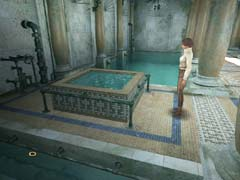

| 概要 | 地図 | |
| 淡いヒント集 | ヒント集 | 的確なヒント集 |
| 攻略最短ルート | Syberia 攻略へ |
| << 前の段階へ | 地域選択へ |
アラルバッド
|
カクテルを作る
ブルーヘレナの作り方を知ったあなたは、すぐにカクテルを作らなければならない。ここで油を売ることの利点は何もないだろう。しかし、カクテルを作るにはどうしたらよいか。目の前にある装置が使えるような気はするのだが。・装置に足りないものを取り付ける ・装置を動かし、カクテルを作る ・ヘレナにグラスを割ってもらう ・飛行船へ行く あなたは装置を動かすことができるだろうか。 
・これが装置である。まずは使い方を調べなければならない。 ・どこかに説明書がある。探してみよう。 ・装置に不足しているのは3品である。どれもカクテルに必要なものだ。 
・カクテルを作るのに必要なものの中で1つはあなたが持っている。 ・では残りの2つはどこにあるのか? 注意深く探そう。近くにあるはずだ。 ・ハチミツを見つけたら、使う前に注意して欲しい。固まっているハチミツは使い物になるのだろうか?

・固まったハチミツは溶かす必要があるのだ。 ・ではどこで、どうやってやるのか。
・装置が使えるようになったら、実際に作らなければならない。 ・どうやれば動くのだろうか? ・鍵盤の意味は説明書に書いてある。ボタンの意味は絵柄で判断しよう。 あとはヘレナにグラスを割ってもらい、その後飛行船へ行けばよい。グラスはどこにあるのだろうか? また、どうして割る必要があるのだろうか? それらは自分で調べて欲しい。 |
| << 前の段階へ | 地域選択へ |
| 概要 | 地図 | |
| 淡いヒント集 | ヒント集 | 的確なヒント集 |
| 攻略最短ルート | Syberia 攻略へ |
Syberia
| 目次へ戻る | ページの上部へ |